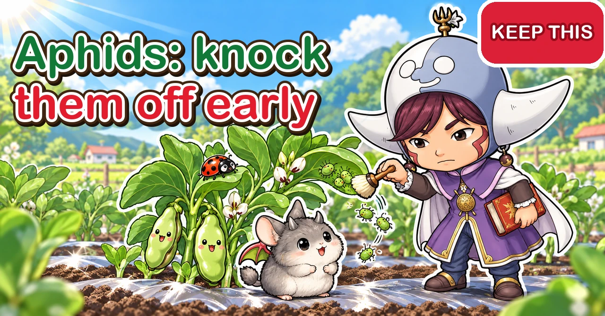
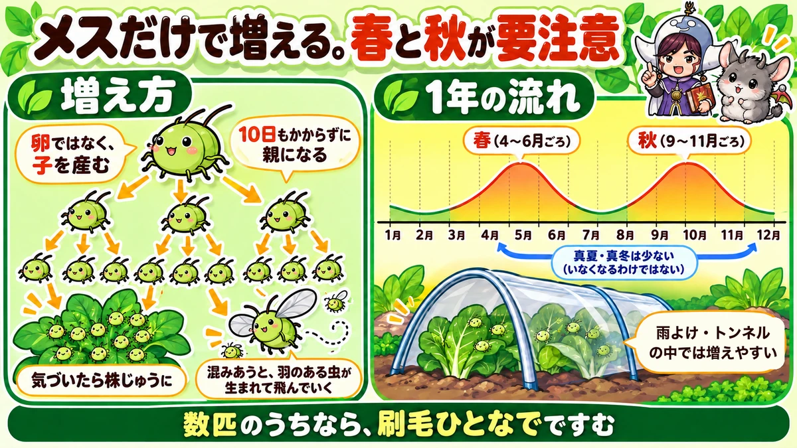
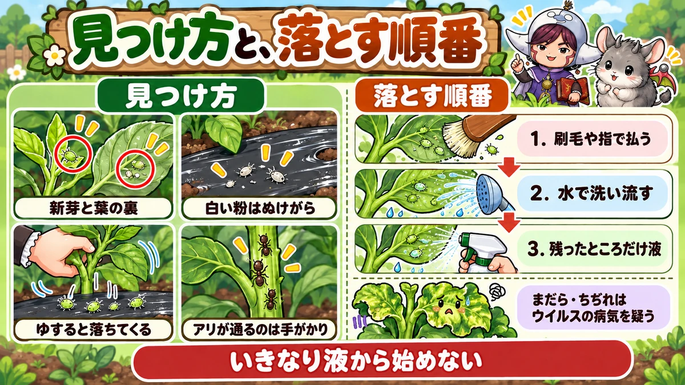
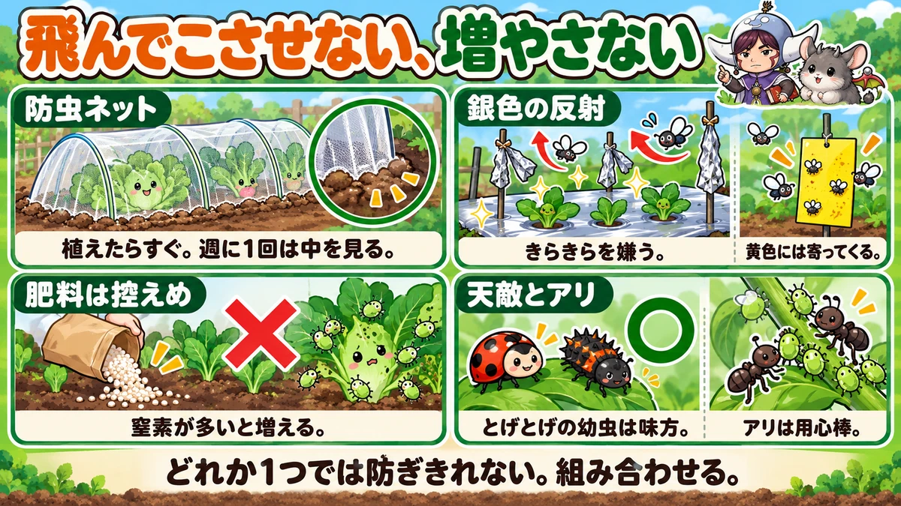

Aphids: knock them off while there are only a few 🐞 Finding them, removing them without sprays, and prevention

🐞 "The tips of my broad beans were black with them."
🐞 "I sprayed and they came straight back."
🐞 "The new leaves went crinkled and mottled."
Hello, I'm Eiko. Eight years of growing vegetables organically and without pesticides, and a teaching licence in science.
If you grow vegetables, you will meet aphids — packed on broad bean tips, under Chinese cabbage leaves, on aubergine shoots. They're tiny, but leave them a little and there are more of them every day.
This article covers why they multiply so fast, how to find them, how to remove them without pesticides, how to keep numbers down, and what they do in winter.
Where to look: the soft growing tip; leaf undersides, especially along the big veins; flower bases and buds; in cold weather, the base of the plant, under mulch, and under outer leaves.
The order: ① a few — brush them off; ② colonies — wash them off with water; ③ only what's left — a spray, rinsed off afterwards; ④ crinkled, mottled new growth — suspect a virus.
Prevention: netting at planting (still look inside weekly), silver reflection, not too much nitrogen, don't chase off natural enemies, and watch for ants.

What this diagram says （図解の文字）
- Females alone multiply them. Spring and autumn are the danger times
- "How they multiply" — "they give birth to young, not eggs" ／ "adults in under 10 days" ／ "before you know it, they're all over the plant" ／ "when it gets crowded, winged ones are born and fly off"
- "Their year" (central Japan) — peaks in "spring (about Apr–Jun)" and "autumn (about Sep–Nov)" ／ "fewer in midsummer and midwinter (but not gone)" ／ "they multiply easily under rain covers and tunnels"
- "While there are only a few, one stroke of a brush does it"
① What aphids are
Many kinds, but only a few on vegetables
- Green peach aphid: green or pinkish. On a huge range of crops — aubergines, peppers, Chinese cabbage, komatsuna
- Melon (cotton) aphid: small, yellowish to dark green. Common on cucumbers, aubergines, okra, peppers
- Mealy cabbage aphids: look dusted with white powder; on radish, cabbage, broccoli and other brassicas
- Black legume aphids: shiny black, crowding the tips of broad beans and peas
- Onion-family aphids: glossy black, lined up on leeks and garlic chives
Different colours, same approach. What differs is which crop and which part of it they favour.
What's the harm?
They push a needle-like mouth into the plant and suck sap. A few do little damage, but large numbers stunt and curl new growth. They also excrete surplus sugar as sticky honeydew, which coats the leaves. And worst of all — they spread virus diseases (see ④).
Why they multiply so fast
From spring to autumn, aphids reproduce without males, and give birth to live young rather than laying eggs. The young are female too, and in good conditions they're adults themselves in under ten days. One aphid landing means mother, daughters and granddaughters all breeding at once. For the first few days there seem to be "only a few" — then, two or three weeks later, they're everywhere.
So the single most important thing is to find them and knock them off while there are only a few. A few take one stroke of a brush. A few hundred mean repeated work — and a plant that's already weakened.
Winged and wingless
The aphids you usually see have no wings and hardly move, sucking in one cluster. But when they get crowded, or the plant weakens, winged aphids are born and fly off to other plants and other gardens. That's why aphids suddenly "appear" — and why netting and reflective surfaces work: they stop the arrivals.
② When they're worst
Aphids like it neither too hot nor too cold. In much of Japan the two problem seasons are spring (roughly mid-spring to early summer), when they hit young summer crops and broad beans and peas, and autumn, when they move onto Chinese cabbage, radish, komatsuna and broccoli. They slow down in midsummer and midwinter — but don't disappear. In summer they still breed in shady, rain-sheltered foliage; in winter they survive in warm spots.
Rain knocks them off. So a rain cover over tomatoes or cucumbers, good as it is against disease, also stops rain washing aphids away. Check under the leaves of covered plants more carefully — and the same goes for plants under winter tunnels.
Get ahead of spring. The spring explosion starts from a few survivors of winter. Knock them off in winter or early spring and the build-up is slower. When planting in spring, check nearby weeds and leftover winter crops — they're often the starting point.
③ Finding them
Aphids like soft growth: the growing tip at the very top, and leaf undersides along the big veins. They're rarely on top of the leaf, so looking down from above won't find them. Get in the habit of turning leaves over, and you'll spot them at the few-aphid stage. Also look at flower bases and buds: broad bean and pea tips; aubergine and pepper shoots and flowers; brassica leaf undersides and young central leaves.
- Clue 1 — white specks on black mulch. Aphids shed their skins several times as they grow; the cast skins look like white dust. White specks on the mulch mean aphids on the leaf above
- Clue 2 — shake the plant. A light shake or a tap on the leaves makes them drop; they show up well on black mulch, or hold white paper underneath. Make one shake part of every check
- Clue 3 — ants running up and down the stem. They're there for the honeydew, so aphids are usually above
- Clue 4 — sticky, shiny leaves from honeydew
In spring and autumn, check every 2–3 days if you can, and at least weekly. You don't need to check every leaf: the new shoots and the undersides of the outer two or three leaves, plant by plant.

What this diagram says （図解の文字）
- How to find them, and the order to remove them
- "Finding them": "new shoots and leaf undersides" ／ "white specks are cast skins" ／ "shake it and they fall" ／ "passing ants are a clue"
- "The order": "1. brush off with a brush or fingers" → "2. wash off with water" → "3. spray only what's left"
- "Mottling and crinkling: suspect a virus"
- "Don't start with a spray"
④ Removing them without pesticides
- 1. A few — brush them off. A soft brush, paintbrush or old toothbrush; or squash them with your fingers (gloves help). Wingless aphids can't get straight back, though some climb back from the base — tread on the ones on the mulch. If a shoot tip is solid with them, pinch it off — on broad beans, pinching the tip removes their favourite spot anyway
- 2. Colonies — wash them off. A strong spray from a hose or watering can, aimed upward at the leaf undersides. Most aphids washed off never make it back. It's the easiest no-spray method and the gentlest on the plant — a balcony container can go under the shower. On small seedlings use a mister or gentle spray so stems don't snap; while plants are flowering, take care not to wash away the pollen. Repeat every 2–3 days — once won't get them all
- 3. Low-tack tape. Wrap masking tape round your fingers, sticky side out, and dab them off. Strong tape tears the leaf surface
- 4. Then — and only then — a spray on what's left. Most sprays only work where they land; started while numbers are high, the missed ones just rebuild
Sprays: what each is good and bad at
- Milk (neat or diluted), sprayed straight on them: as it dries, the film smothers them. Spray on a sunny day so it dries fast, and always rinse it off afterwards, or it smells and grows mould. It only works where it hits, with no lasting effect. Good for knocking numbers down on a few plants
- Neem oil, diluted and sprayed on both sides of leaves and stems. Dilution varies a lot by product — follow the label exactly. Shake well; warm the bottle in hot water if it's solidified. It works slowly, over several sprays a few days apart; some use it as a preventive. Opinions on how well it works are mixed
- Diluted vinegar. In Japan it's officially listed, along with bicarbonate of soda, as a recognised-safe control material. It won't clear aphids on the spot — it's mostly used to make plants less attractive. Too strong and it damages leaves; test a few leaves first
- Coffee, chilli steeped in spirits, wood vinegar and similar home brews: strength varies from maker to maker and so do results. Too strong harms leaves. Make them weak and test on a few leaves
- Soap or washing-up liquid with oil: smothers them and works well on the spot. But detergents aren't made for plants and can damage leaves left on them. Rinse off after a while
- Shop-bought food-based sprays (starch and the like) smother them too, with fixed strength and tested crops. Check the label lists your vegetable
For any spray: spray the undersides, not just the tops; avoid strong midday sun; test new things on a few leaves; check under the leaves again a few days later; and wash anything near harvest well.
⑤ Virus diseases
Aphids' worst trick is carrying viruses. An aphid sucks on an infected plant, moves on, and passes the virus with its next meal. Some viruses pass in just a moment's feeding, so dealing with aphids once they've arrived can be too late — stopping them arriving matters.
Suspect a virus if
- New leaves show a mottle of dark and light green (mosaic)
- New leaves come thin, crinkled or shrunken
- The plant stops growing and stays stunted
- Fruit is misshapen, mottled or bumpy
Cold, drought or hunger can look similar; compare with the new leaves of a healthy plant. There's no cure. Left in place, its aphids carry the virus on. Sadly, pull infected plants roots and all, and take them off the plot — slip a bag over first so the aphids don't scatter. Some viruses also spread in sap, on scissors: wipe blades with alcohol, wash your hands, and work on healthy plants first.

What this diagram says （図解の文字）
- Stop them flying in, stop them multiplying
- "Insect netting" — "on as soon as you plant; look inside once a week"
- "Silver reflection" — "they dislike glitter" ／ "they're drawn to yellow"
- "Go easy on fertiliser" — ✕ "more nitrogen, more aphids"
- "Natural enemies and ants" — ◯ "the spiky larva is on your side" ／ "ants are bodyguards"
- "No single method is enough. Combine them"
⑥ Prevention
Netting from planting day
A net tunnel is the surest way to stop winged aphids landing. Bury the edges. But aphids are tiny and some mesh lets them through; finer mesh keeps more out but traps heat and damp. And inside the net, there's no rain and no predators — once a few get in, they can do better than outside. Look inside weekly.
Silver reflection
Winged aphids avoid bright silver or white glare. Use silver mulch (works best while plants are small and the ground is visible), silver tape over or around the bed, or aluminium foil scrunched and re-opened so it scatters light, tied to canes or laid at the base. Once leaves cover the ground it works less well — it's protection for the vulnerable seedling stage, and it reduces arrivals rather than removing aphids already there.
Yellow attracts them
A yellow sticky trap catches winged aphids — more an early warning of "they're flying now" than a way to reduce numbers. Hang it a little away from the crop, not right beside it, or you draw them in.
Go easy on nitrogen
Too much fertiliser, especially nitrogen, makes soft leaves and richer sap — a feast. The more you top-dress to speed things up, the more aphids you get. Very dark, large, floppy leaves suggest overfeeding.
Air and tidiness
Crowded plants hide aphids. Space plants properly, remove dead and crowded leaves. And clear finished crops promptly: weeds around the plot and forgotten old plants breed winged aphids that fly in however well you guard. Don't pile infested plants in a corner.
⑦ Ants and natural enemies
Ants are aphid bodyguards
Ants love honeydew, and in return they chase off ladybirds and other predators. Where ants are busy, aphids thrive.
- Wrap a band of low-tack tape or a sticky band round the stem so ants can't climb
- Weed round the base to cut their routes
- Remove the aphids, and the ants stop coming
Ants don't eat vegetables. The aim isn't to kill ants — it's to break up the bodyguard arrangement.
Ladybirds and friends
- Seven-spot and other aphid-eating ladybirds — adults and especially larvae. The larvae are dark and spiky and look nothing like the adults. Beware: some ladybirds (such as the 28-spot) eat aubergine and potato leaves. The aphid-eaters are the shiny ones
- Hoverfly larvae — maggot-like, working through the colony
- Lacewing larvae — like tiny crocodiles
- Parasitic wasps lay eggs inside aphids, which swell into brown or golden "mummies". Leave mummies alone — new wasps hatch from them
Predators build up only after the aphids do, so they may arrive too late on their own. Some growers sow oats or other cereals, or clover, round the plot: cereal aphids mostly don't move onto vegetables, and they feed a standing army of ladybirds. Spray as little as possible, so you don't hit your allies.
⑧ Winter aphids
Fewer, but not gone. Some kinds produce males and egg-laying females in late autumn and overwinter as eggs; in mild areas others overwinter as adults and nymphs on crops and weeds. The ones you see are those — in sunny spots at the base, under leaves near the warm mulch, and in the growing tips.
Tunnels breed them in winter. Under polythene or fleece it's much warmer — for aphids too. Knock them off before you close the tunnel, and on mild days open the ends to look and to ventilate.
Winter is a chance to cut numbers: clear finished plants, aphids and all; knock off clusters under mulch and dead leaves; tidy weeds; dig empty beds and leave them open to the cold. Fewer in winter means a smaller start in spring.
⑨ Crop by crop
- Broad beans and peas: black aphids at the tips; explode in spring. Pinching the tips removes their spot
- Brassicas: autumn aphids under the leaves and on young central leaves. Once cabbages and Chinese cabbages start to heart, aphids inside are hard to reach — act before then
- Aubergines, peppers, cucumbers, okra: after planting in spring and again as summer heat fades. Shoots, flowers and undersides. Cucumbers and aubergines are prone to aphid-borne viruses — protect them as young plants
- Leeks and garlic chives: glossy black rows on the leaves; strip them off between finger and thumb, or wash off
- Strawberries: in early spring, under leaves and in the crown. Remove dead leaves for air, brush them off
⑩ Where growers disagree, and common mistakes
- Home-made sprays or not? Some say physical removal is surer and kinder to leaves; others like home brews. Either way: brush and water first, sprays after, test small
- Buying in ladybirds? Adults usually just fly away. In a home garden, it works better to encourage the ones that come naturally
- Finer mesh? Keeps more out, but gets hot. Finer for autumn and winter crops, more airflow in summer
- "Only a few" → all over the plant in 2–3 weeks
- Netted and forgot → they bred inside. Look weekly
- Sprays alone → the misses rebuild. Reduce first
- Feeding a struggling plant → makes it tastier to aphids. Remove the aphids first
- Killing ladybird larvae → spiky dark larvae look like pests. Check before you squash
Can you eat affected vegetables? Yes, well washed — swish leaves one by one in a bowl of water. Where do they come from? Weeds and neighbouring gardens, on the wind, or already on bought plants. High-rise balconies? Yes, they ride the wind up there too.
Science bit: four whys 🔬
Why females only? In warm months, skipping males means every aphid can breed and every newborn starts breeding soon. In autumn, as days shorten and it cools, some kinds produce males and egg-laying females — eggs survive cold better. Speed in summer, survival in winter.
Why silver repels and yellow attracts. Flying aphids are thought to choose landing spots by colour. Yellowish resembles young, growing leaves — a landing cue. Strong silver or white glare looks like sky, not a place to land.
Why nitrogen helps them. They drink the sugar-carrying sap, which is rich in sugar but poor in body-building nutrients — so they drink huge amounts and excrete the extra sugar as honeydew. More nitrogen means more of those nutrients in the sap: faster growth, more young.
Why ants and aphids help each other. Ants get a daily meal of honeydew; aphids get protection. A partnership where both benefit — symbiosis — playing out on your plants.
To sum up
- ✅ Females alone, adults in under ten days — act while there are a few
- ✅ Worst in spring and autumn; they thrive under rain covers and tunnels
- ✅ Tips and leaf undersides; clues: white specks, ants, stickiness
- ✅ Brush, then water, then sprays
- ✅ Home brews vary — test first
- ✅ Virus-infected plants can't be cured: pull them; clean scissors
- ✅ Netting, silver reflection, easy on nitrogen
- ✅ Break up ant bodyguards; spiky ladybird larvae are friends
- ✅ Winter clean-up makes spring's start smaller
You'll never get aphids to zero. But a habit of spotting them while there are only a few cuts the damage enormously. Next time you walk round, turn over a few leaves and give each plant a little shake 🐞
Thank you for reading!